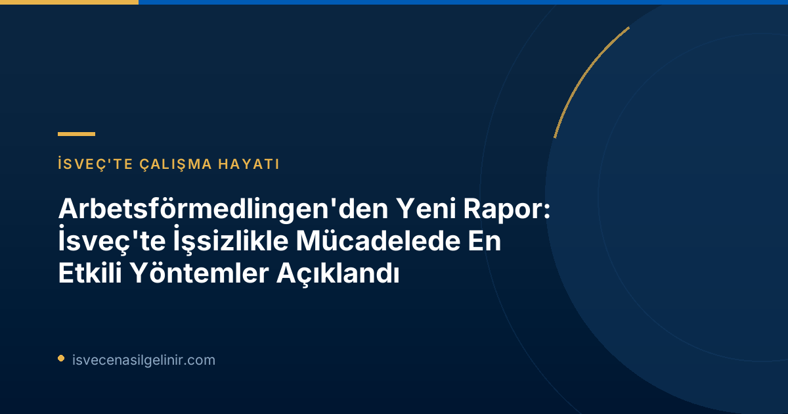

Arbetsförmedlingen'den Çığır Açan Yeni Rapor: İşsizlikle Mücadelede Yol Haritası
Arbetsförmedlingen'in yayımladığı "İş Sağlayan Müdahaleler" başlıklı kısa rapor, iş piyasasına entegrasyonda zorluk çeken işsizler için en iyi sonuçları getiren stratejileri derinlemesine inceliyor. Rapor, sadece iş arayanlara yönelik pasif destekler yerine, işverenleri de aktif olarak sürece dahil eden entegre yaklaşımların çok daha başarılı olduğunu ortaya koyuyor.
Başarıya Götüren Anahtar Faktörler: Hangi Uygulamalar En İyi Sonucu Veriyor?
Arbetsförmedlingen'in analizine göre, bazı müdahaleler işsizlerin istihdam piyasasına katılımını önemli ölçüde hızlandırıyor. İşte raporun öne çıkardığı temel faktörler:
İşgücü Piyasası Eğitimleri ve Stajlar
Kariyer değiştirmek, yeni bir alanda uzmanlaşmak veya mevcut becerilerini geliştirmek isteyenler için işgücü piyasası eğitimleri hayati bir rol oynuyor. Bu eğitimler, bireylerin güncel piyasa taleplerine uygun beceriler kazanmasını sağlarken, stajlar ise teorik bilgiyi pratik deneyimle birleştirme fırsatı sunuyor. Bu tür programlar, işverenlerin aradığı niteliklere sahip adayların yetişmesine doğrudan katkıda bulunuyor.
Sübvanse Edilen İstihdam Fırsatları
Sübvanse edilen istihdam, işverenlere işe almaları için mali destek sağlayan bir modeldir. Bu model sayesinde, istihdam piyasasından daha uzak konumda olan bireylerin işe alınması teşvik edilir. Bu yöntem, hem işsizlerin iş deneyimi kazanmasını kolaylaştırır hem de işverenlerin nitelikli işgücü ihtiyaçlarını karşılamasına yardımcı olur. Rapor, bu tür istihdamın hem birey hem de toplum için bir kazanım olduğunu özellikle vurgulamaktadır.
Arbetsförmedlingen ve İşverenlerle Yakın Temasın Önemi
Arbetsförmedlingen bünyesindeki iş danışmanları ile iş arayanlar arasındaki düzenli ve yakın temas, başarılı sonuçlar elde etmede kritik bir faktör olarak belirtiliyor. Dahası, işverenlerle kurulan güçlü ve doğrudan bağlar, iş arayanların doğru pozisyonlara yönlendirilmesinde ve işe yerleştirilmesinde belirleyici oluyor. Kurumun işverenlerle yaptığı aktif çalışmalar, işsizlik süresini kısaltmada önemli bir etkiye sahip.
Arbetsförmedlingen'den Önemli Notlar
Arbetsförmedlingen iş danışmanı Anders Böhlmark'ın belirttiği gibi, "İş arayanlara desteği aktif işveren çalışmalarıyla birleştiren müdahaleler, sadece iş arayana odaklanan müdahalelerden genelde daha iyi sonuçlar vermektedir." Bu yaklaşım değişikliği, kurumun devam eden dönüşüm çalışmalarıyla da örtüşmektedir.
Ocak-Nisan 2026 döneminde, Arbetsförmedlingen iş arayanlarla 114.000 fiziksel görüşme gerçekleştirmiştir. Bu, bir önceki yılın aynı dönemine göre %20'den fazla bir artışı temsil etmektedir. Ayrıca, bu dönemde işgücü piyasası eğitimlerine ve staj programlarına katılımda da önemli bir yükseliş gözlemlenmiştir. Detaylı bilgilere ulaşmak ve sverigemedborgarskapsprov.com adresini ziyaret ederek vatandaşlık süreçleri hakkında bilgi almak için web sitemizi inceleyebilirsiniz.
Arbetsförmedlingen'in Dönüşüm Süreci ve Yeni Yaklaşımları
Arbetsförmedlingen, bu raporun bulguları doğrultusunda hizmetlerini yeniden şekillendiriyor. Kurum, iş arayanlarla daha fazla yüz yüze görüşme yapmaya, eğitim ve staj gibi iş odaklı müdahalelere ağırlık vermeye ve işverenlerle işbirliğini güçlendirmeye odaklanmaktadır. Bu sayede, işsizlikte geçirilen sürenin kısaltılması hedeflenmektedir.
Değerlendirme birimi başkanı Christina Olsson Bohlin, "Daha fazla işveren, iş piyasasından daha uzakta olan kişileri sübvanse edilmiş istihdam gibi yollarla işe almaya istekli olursa, hem daha fazla kişi iş bulabilir hem de işverenlerin yetenek ihtiyaçları karşılanabilir. Bu, hem bireyler, hem işverenler hem de genel olarak toplum için bir kazançtır," ifadelerini kullandı.
Özet ve Sonuç
Arbetsförmedlingen'in yeni raporu, İsveç iş piyasasında işsizlikle mücadelede proaktif ve işbirliğine dayalı yaklaşımların ne kadar kritik olduğunu bir kez daha gösteriyor. Eğitim, staj ve işverenlerle entegre çalışmalar, bireylerin istihdam edilme şansını artırırken, aynı zamanda İsveç ekonomisinin de güçlenmesine katkı sağlıyor. İsveç'te bir kariyer hedefleyen herkesin bu bulguları dikkate alması ve sunulan fırsatlardan en iyi şekilde faydalanması önemlidir.
Referanslar:
- Arbetsförmedlingen Basın Duyurusu: https://arbetsformedlingen.se/om-oss/press/pressmeddelanden?id=C87D6B2F11408FCA&pageIndex=1&year=0&uniqueIdentifier=
- İsveç Vatandaşlık Sınavı Bilgileri: https://sverigemedborgarskapsprov.com
İsveç'te İş ve Kariyer Fırsatları Hakkında Daha Fazlasını Keşfedin!
İsveç'e göç etmeyi veya burada bir kariyer kurmayı mı düşünüyorsunuz? İsveç İşçi Bulma Kurumu'nun son raporu, iş piyasasına giriş yollarını aydınlatırken, biz de size daha fazla rehberlik sunmak için buradayız. İsveç'teki çalışma hayatı, vatandaşlık süreçleri ve daha fazlası hakkında güncel ve kapsamlı bilgilere ulaşın.